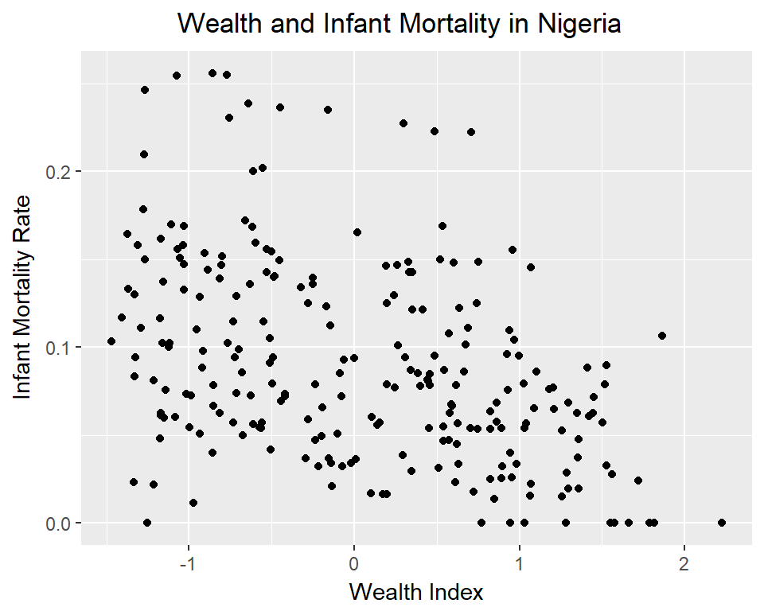
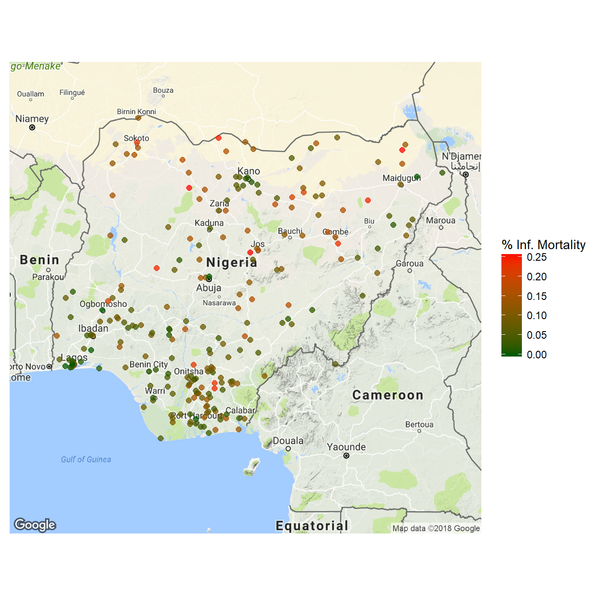

Births in Nigeria
Using data from a survey conducted on births in Nigeria, we investigate infant mortality. The first task is to change the wide format data (where each row represents a mother, and columns indicate each of her children) to long format data (where each row represents a child, and columns can contain mother level data.) The complete data munging leaves the data in a long format, with each column of data in the appropriate factor or numeric format. A sample of some columns is shown below.
| caseid | wealthindex | bord | lives_with | gender | |
|---|---|---|---|---|---|
| 3 | 1 1 2 | -1.42056 | 3 | lives elsewhere | female |
| 10 | 1 2 2 | -1.35903 | 6 | respondent | female |
| 32 | 1 8 2 | -0.97078 | 5 | lives elsewhere | female |
| 234 | 3 14 3 | -1.31134 | 1 | lives elsewhere | male |
| 499 | 6 15 2 | -0.93215 | 2 | respondent | female |

One of the questions of interest is the prevelance of infant mortality in the area. This indicator variable is calculated by finding the which observations have an age at death less than or equal to 12 months. This survey is a multilevel cluster sample, with the highest level of clustering at the town level. To delve in to the differences in infant mortality across clusters, we first look at the scatterplot of the infant mortality rate and the average wealth index in a town. We appear to see a negative correlation between the two variables, where towns with a high wealth index show a lower infant mortality rate.
To look at the variation in average infant mortality between clusters across space, we plot the locations of each of the sampled towns, coloring points by their respective rates of infant mortality. It appears that the coastal regions tend to have lower infant mortality rates, with the inland regions more commonly showing high mortality rates. The high mortality areas seem to correspond to the areas with low per capita GDP.
{kind=link}
